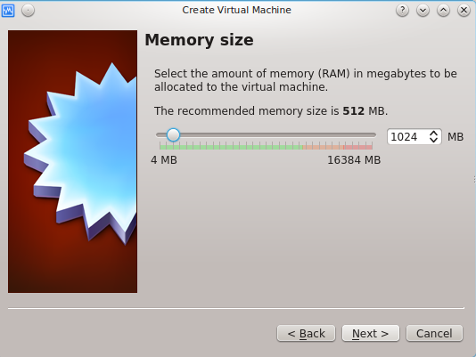
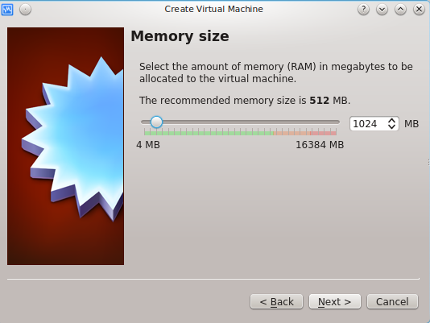
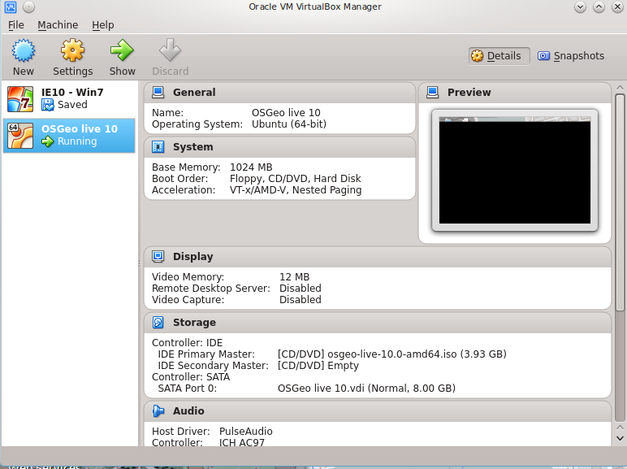

3. Installation
For this workshop you need:
- Linux operating system like Ubuntu
- An editor like Gedit, Medit or similar
- Geoserver for the routing application
- Internet connection
Note
Other systems canbe used, but it’s out of the scope of this workshop
All required tools are available on the OSGeo Live.
The following reference is a quick summary of how to use OSGeo Live on your computer.
3.1. OSGeo Live using a USB stick or CD
Insert the USB or CD
Restart your computer and wait for that first screen to pop up. Often, it’ll say something like
“Press F12 to Choose Boot Device” somewhere on the screen. Press that key now.”
Give it a moment to continue booting, and you should see a menu pop up with a list of choices on it.
- Highlight your CD or USB drive and press Enter.
Exit the menu, the computer will restart using the selected device
Choose your preferred language and click on ‘Try Ubuntu’.
More information on: http://www.ubuntu.com/download/desktop/try-ubuntu-before-you-install
3.2. OSGeo Live on a virtualBox
 


- Fill hard drive file type

- Fill Storage on physical hard drive

- Fill Storage on physical hard drive

- Fill File location and size

- Click on storage & click on “add icon” and “add CD/DVD device”

- Add the osgeo-live-10.0-amd64.iso file.

- Now you have OSGeo Live on the virtualBox

- Double Click on “OSGeo live 10”.
- Choose your preferred language and click on ‘Try Ubuntu’.
- to be able to use the Clipboard between your computer and the virtual machine:
 Workshop FOSS4G Bonn
2016
Workshop FOSS4G Bonn
2016
{kind=link}
{kind=link}